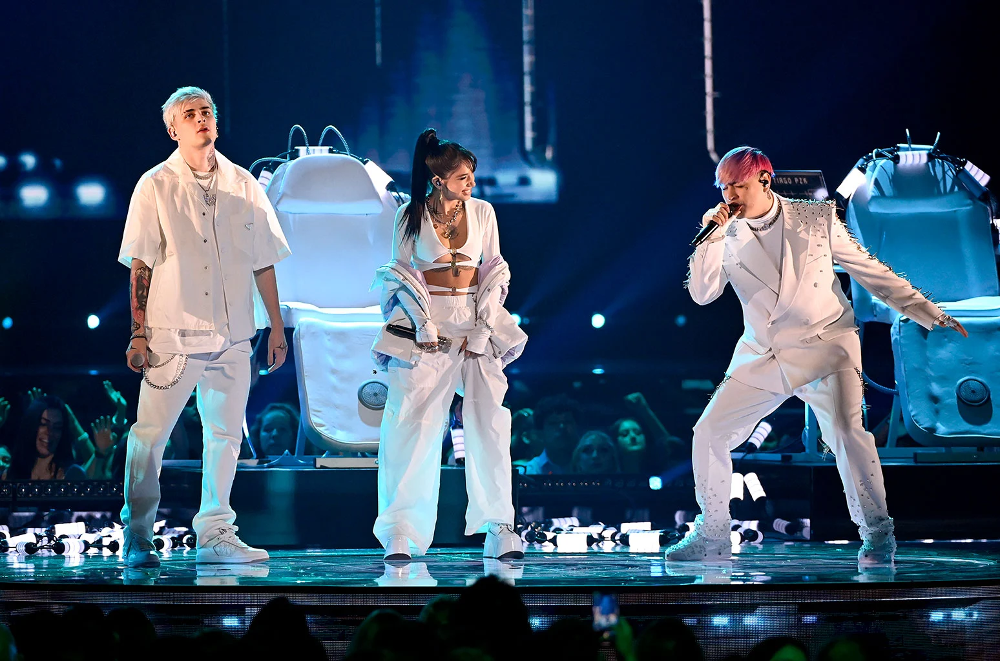
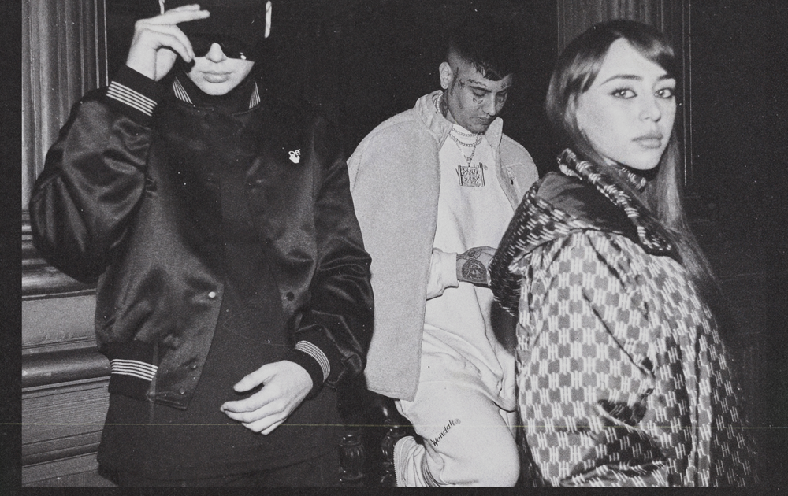

En el 2015 hizo un monólogo, una especie de parodia, que duraba 5 minutos. María se lo mostró a su mejor amiga y la convenció de que la subiera a Facebook. En horas, el video tuvo 1 millón de vistas, se hizo viral y ahí le empezaron a llegar miles de mensajes.
Eso la impulsó a crear su propio canal de Youtube donde subía
mejor amiga y la convenció de que la subiera a Facebook. En horas, el video tuvo 1 millón de vistas, se hizo viral y ahí le empezaron a llegar miles de mensajes.
Eso la impulsó a crear su propio canal de Youtube donde subía todo tipo de contenidos: hablaba, contaba anécdotas, enseñaba a bailar, cantaba, etc.
En septiembre de 2019 lanza “222", su primer EP con tres canciones en las que incursiona en el pop urbano con breves pasajes de hip hop. El 27 de noviembre lanza el video de la canción “High”.
El 15 de enero de 2020 lanza el video de la canción “Dejemos que Pase”. El 22 de febrero publica el video y sencillo de "Perdidamente". El 22 de abril estrena "Moon" en colaboración con Dani. El 2 de julio la cantante lanza una canción titulada “Tú Me Lo Haces Fácil". El 30 de agosto comparte un adelanto del remix de "High" junto a Tini Stoessel y Lola Indigo. El 3 de septiembre lanza el video de "High Remix" junto a Tini y Lola Indigo. En noviembre se une a Rusherking para darle sonido a “Confiésalo”. El 17 de diciembre se lanza la version remix de “Aunque Ya No Estés Aquí” de FMK en la que colabora con Beret.
En enero de 2021 estrena el sencillo y videoclip "Animal" junto a Cazzu. El 25 de febrero presentó “Animal Parte 1”, la primera parte de su primer álbum, que contiene un total de 4 canciones, y estrena el corte y videoclip "Acaramelao". El 19 de marzo se une a Paty Cantú para hacer "Si no fuera Tu". El 30 de abril estrena el single "Miénteme" junto a Tini. En mayo estrena "Te necesito" junto a Khea. Ese mismo mes lanza "¿Qué mas pues?" junto a J. Balvin. El 10 de junio lanza "Cazame" junto a Tiago PZK. El 25 de junio estrena el single y videoclip "Bobo" en colaboración con Bad Gyal y Mariah Angeliq. El 29 de julio lanza su single y videoclip "Mi debilidad". En agosto lanza el videoclip de "Wow wow" junto a Becky G, y también publica el disco "Animal" compuesto por 11 tracks. El 2 de septiembre lanza "Mal acostumbrao" junto a Mau y Ricky. El 7 de octubre estrena el single "Antes de ti" junto a Rusherking.
El 24 de noviembre estrenan el single "Los tragos" en feat con Reik.
El 13 de enero de 2022 lanza el single y videoclip "Tranquila" junto a FMK.
El 10 de enero estrena el single y videoclip "Marte" junto a Sofía Reyes.
El 14 de abril se presenta en vivo en el Estadio GEBA de Buenos Aires, para luego llevar sus shows a Chile y España.
El 4 de marzo de 2022 lanza el single "Te espero" en feat con Prince Royce.
El 13 de mayo se estrena el videoclip "Hasta los dientes" de Camila Cabello en donde colabora.
El 23 de mayo lanza el single y videoclip "Maléfica" junto a Cazzu.
El 2 de junio publica el single y videoclip "Ojalá", una canción para "lloriperrear".
El 8 de agosto lanza el backstage de "Ojalá".
El 25 de agosto lanza el single y videoclip "Discoteka" en colaboración Lola Índigo.
El 8 de septiembre lanza el single y videoclip "Automático".
El 27 de octubre lanza el single y videoclip "Éxtasis" junto a Manuel Turizo.
Con tan sólo 18 años, irrumpie en la escena cuando lanzó en su canal de YouTube, el 25 de abril de 2019, "Wapo Traketero". Con ese lanzamiento rápidamente Nicki Nicole genera furor en la comunidad artística y se convirtió en una de las máximas figuras emergentes en la escena. El 14 de agosto estrena una sesión con Bizarrap y en tiempo récord se posiciona en el puesto #1 en el Top 50 de Argentina en Spotify, dentro del Top 10 en muchos países y dentro de las 100 canciones más escuchadas del mundo. Además, llega a los primeros lugares del ranking de tendencias de YouTube en Argentina y Uruguay. El 23 de agosto Nicki presenta su nuevo single, "Años Luz", en el cual se vuelca a un sonido más cercano al R&B que deja en evidencia la versatilidad y talento de esta joven artista.
El 10 de octubre con un video estrena su nueva canción llamada "F**cking Diablo", apenas publicada ya fue tendencia en Youtube. El 8 de noviembre, Nicki Nicole lanza "Recuerdos", su esperado álbum debut que tiene 9 canciones inéditas que van desde el pop hasta el R&B, pasando por el trap y el soul.
El 13 de mayo de 2020 lanza "Colocao", su nuevo single y video hecho en cuarentena. El 23 de julio participa del video "Mamichula" de Trueno. El 10 de septiembre lanza el video y el sencillo "Mala Vida". En octubre reversiona en formato acústico, su canción "Plegarias". El 10 de diciembre la cantante, rapera y compositora lanza su alegre y divertido single “Verte” junto a Dread Mar I y Bizarrap.
El 3 de febrero del 2021 se une a Rochy RD y Myke Towers para hacer el remix de "Ella No Es Tuya".
El 5 de marzo, se une a NTVG para hacer la canción "Venganza”.
El 24 de marzo lanza junto al artista puertoriqueño Lunay su sencillo y video titulado "No toque mi naik". El 27 de abril se presentó en The Tonight Show Starring, el reconocido programa nocturno de Jimmy Fallon, siendo la primera artista argentina en actuar en el programa estadounidense.
El 30 de abril se une a Pedro Capó y a De La Ghetto para hacer “Tu fanático remix”.
El 31 de agosto lanza el videoclip "Toa la vida" junto al artista puertorriqueño Mora.
El 13 de Octubre presenta su participación en los conciertos estadounidenses Tiny Desk Concert.
El 29 de octubre lanza su álbum "Parte de mi".
El 2 de diciembre lanza "Formentera" junto a Aitana.
El 19 de mayo de 2022 lanza el single "Nota" junto a Eladio Carrión.
El 30 de mayo lanza el single y videoclip "Intoxicao" junto a Emilia Mernes.
El 21 de julio lanza el single "Naturaleza" junto a Camilo.
El 1 de septiembre publica el single y videoclip "Nobody like yo".
El 4 de noviembre lanza el single y videoclip "Grillz" junto a Aleman.
El 16 de noviembre colabora en el single "La terapia remix" de Young Cister, junto a Álvaro Díaz.
Duki es un freestyler y cantante argentino. Nació como Mauro Ezequiel Lombardo en Buenos Aires el 24 de junio de 1996.
Fue inspirado al escuchar batallar a Kodigo, otro rapero nacional.
En 2013 participó por primera vez en una batalla, en el encuentro Madero Free, ganado un “2 vs. 2”.
En 2015 se anotó en El Quinto Escalón de Parque Rivadavia, donde obtuvo buenos resultados.
En 2016 llegó a la final de una de las fechas de El Quinto y participó en “El Campito Free VIII” de Ramos Mejía, donde se cruzó con Lit Killah, quien le ganó con el famoso acote “Brisa”.
En 2017 compitió nuevamente en El Quinto Escalón junto a MKS contra Paulo Londra y Beelze, saliendo ganador. Ganó también un torneo junto a Dani en Mar del Plata. Las repercusiones y su creciente fama lo hacen grabar sus temas en forma profesional. Este año edita su primer sencillo, titulado “No Vendo Trap”. Lanzó también “Hello Cotto”, “Ven a Buscarme”, “Escalera”, “She Don’t Give a FO”, “Rockstar” y “Level Up”. A fines de noviembre lanzó “Loca”, junto a Khea y Cazzu.
El 29 de enero de 2018 lanza “Me Dejaste Así”. El 23 de febrero edita “Si Te Sentís Sola”. El 16 de marzo se edita una nueva versión de “Loca”, donde Bad Bunny le pone una líneas de su autoría. El 20 de abril sale "Hijo de la Noche". Canta por primera vez en el Teatro Gran Rex el 4 de mayo. El 10 de ese mes estrena "Punto G", junto a Bad Bunny y DrefQuila. Con Neo Pistea graba "Xanax", que se conoce el 16 de mayo. El 1° de junio presenta "Fvch Luv", con C.R.O. El día 15 sale "Ferrari", junto a Dicc. El 10 de agosto suena "No Me Llores", a dúo con Leby. Cinco días después se publica "20". El 14 de septiembre sale "Vampiros" y el 29, "Mi Chain de Roque".
El 4 de junio colabora en “Panamá” canción de Trueno. A fines de junio lanza "2:50 remix" junto a Tini y Mya.
El 13 de julio lanza el single y videoclip "Como si importara" junto a Emilia Mernes. El 14 de junio lanza la colaboración "Otra vez"
junto al uruguayo Pekeño 77.
El 3 de septiembre estrena el single y videoclip "Ley de atracción", en cuya producción musical participa el productor Caleb Calloway.
Luego sale el single "Unfollow" en colaboración con Bizarrap y Justin Quiles.
El 11 de noviembre estrena el videoclip de "Mala Mía" en feat con LIT Killah.
El 26 de noviembre lanza su disco "Temporada de reggaetón", compuesto por siete canciones.
El 27 de enero de 2022 estrena el single “Interestelar“ junto a FMK y C.R.O.
El 14 de febrero de 2022 lanza el single y videoclip titulado “Esto recién comienza“ junto a Emilia Mernes.
En febrero de 2022 participa del "Rock and roll hall of fame" en el NBA All Star 2022 junto a Lunay en Cleverland, Estados Unidos.
El 31 de marzo lanza el single y videoclip "Si quieren frontear" en feat con De La Ghetto y Quevedo.
El 20 de mayo de 2022 estrena el single y videoclip "París" junto a la banda colombiana Morat. Los artistas se encontraron en París para grabar el videoclip de la canción homónima, dirigido por Jean Lafleur. En esta pieza audiovisual, la banda y Duki muestran París en 3 minutos, desde las calles hasta el cielo de la “Ciudad del amor”.
El 2 de junio lanza el single y videoclip "Antes de perderte".
A fines de junio lanza el disco “Temporada de reggaetón 2”, acompañado por el videoclip "Celosa" en donde actúa también Emilia Mernes. Para presentar el disco, el artista organiza una fiesta en Barcelona en medio de su gira por Europa.
El 20 de julio lanza el álbum y videoclip "Givenchy".
El 15 de septiembre estrena "Party en el barrio" junto a Paulo Londra.
El 16 de noviembre lanza el tema "BZRP Music Sessions #50" junto a Bizarrap.
Lit Killah, nacido en Salta como Mauro Monzón, es un freestyler argentino. En 2013 empezó a ver videos de Freestyle y naturalmente empezaron a brotarle sus propias rimas.
En febrero de 2016 comienza a frecuentar las plazas. Se presentó por primera vez en el encuentro “El Quinto Escalón” (en el Parque Rivadavia del barrio de Caballito, en Buenos Aires) el 9 de abril, donde batalló contra Klan y Kely, resultando ganador el primero.
El 14 de agosto de ese año salió campeón en “El Campito Free VIII”, que se realiza en el Parque Sarmiento de Ramos Mejía, provincia de Buenos Aires, en una final contra Beelze. En esa competencia, sus punchlines tuvieron mucha repercusión, en especial la que lanzó contra Duki, utilizando la palabra “brisa”, usada por su rival en el acote anterior.
En 2017 tuvo un muy buen desempeño, ganando dos fechas consecutivas en El Quinto Escalón. Y la fama ya empezaba a sentirse. En una de las fechas lo rodearon cientos de fans y se armó una ronda que no lo dejó salir por casi dos horas, pidiendo fotos y queriendo estar cerca de su ídolo. El 4 de octubre de ese año Lit Killah lanza su primer tema llamado "De$troy".
El 23 de enero de 2018 edita su single, titulado “Apaga el Celular”. El 8 de junio estrena "Bufón". El 30 de agosto sale "Si Te Vas". El 29 de noviembre sale "Tan Bien", una de las mejores canciones de Lit Killah, en la que colabora Agus Padilla. El 29 de diciembre lanza junto a Bizarrap: BZRP FREESTYLE SESSION #3.
El 25 de abril de 2019 lanza el video de "Eclipse". El 29 de agosto lanza el sencillo y video "Amor Ciego" y el 31 de octubre "Samurai" con la colaboración de Big Soto.
El 7 de febrero de 2020 Lit Killah presenta su nueva canción y video de "Wake Me". El 1 de marzo de 2020 edita la canción "Te sigo" con la colaboración del artista puertorriqueño Randy. El 25 de junio estrena el video y sencillo de "Flexin" junto a Bizarrap. A finales de septiembre presenta su nueva canción, titulada "Se Terminó", que contó con la participación de su amigo, colega y una de las grandes figuras del freestyle hispanoparlante: Kodigo.
El 13 de mayo del 2021 participa junto a Tiago PZK, y Rusherking en el nuevo single y video “Yo se que tu" de FMK.
El 19 de agosto de 2021 lanza su álbum “Mawz“.
El 11 de noviembre estrena el videoclip de "Mala Mía" en feat con Duki.
El 13 de enero de 2022 lanza el single y videoclip "Ayer" junto a Bhavi.
El 7 de abril lanza "Ku`" junto a L Gante y De La Ghetto.
El 14 de abril lanza "De lao a lao: Turreo Sessions # 5 (Remix)" junto a DJ Tao, Kaleb Di Masi, Omy de Oro, Alan Gomez, Javiielo y Dime Ecua.
El 28 de julio lanza el single "La tormenta" junto con el videoclip.
El 1 de septiembre estrena el single y videoclip "Killer bombón” que incluye un sampleo del clásico argentino “El bombón” de la banda de cumbia santafesina Los Palmeras.
El 27 de octubre lanza el álbum "Snipez".
El 8 de noviembre publica el tema y videoclip "Mi culpa" junto a C.R.O .
Martina Stoessel, conocida artísticamente como Tini, es una cantante, actriz y compositora argentina nacida el 21 de marzo de 1997 en Buenos Aires.
Inició su carrera como actriz a los 10 años con un papel menor en la serie infantil argentina "Patito feo", y saltó a la fama mundial por la interpretación de Violetta, el personaje "estrella" de Disney Channel desde el 14 de mayo de 2012. Violetta es una chica adolescente con un talento muy especial para cantar, algo que ella desconoce. Este talento lo heredó de su madre, una famosa cantante que murió en un trágico accidente cuando Violetta era muy pequeña. En la historia, Violetta fue criada en Madrid, y unos años después, al regresar a Buenos Aires, descubre su bella voz.
El 10 de enero de 2020 lanza "Recuerdo", nuevo video y sencillo con la participación de Mau y Ricky. El 11 de marzo, debido al coronavirus, la cantante además de suspender su gira por Europa reprograma el show del 14 de marzo para el 28 de marzo, en el Movistar Arena de Buenos Aires. El 13 de mayo lanza desde su casa y con Sebastián Yatra una íntima versión de "Oye". El 18 de mayo, mediante las redes sociales la artista anuncia su separación de Sebastián Yatra.
Tini ha acumulado 3.500 millones de reproducciones conjuntas entre audio y video a la fecha, y ha colaborado con algunas de las estrellas más talentosas de la música latina actual. Entre 2019 y 2020 ha recorrido Latinoamérica y Europa con su exitosa gira “Quiero volver” y recientemente participó junto Alejandro Sanz como jurado de la nueva temporada de “La Voz” en España. El 3 de septiembre colabora en el remix de "High" junto a María Becerra y Lola Indigo. El 3 de diciembre publica su tercer álbum “Tini Tini Tini”.
El 29 de abril del 2021 lanza "Miénteme" junto a María Becerra. A fines de junio lanza "2:50 remix" junto a Mya y Duki. El 19 de agosto estrena el single y videoclip "Maldita foto" junto al colombiano Manuel Turizo. El 30 de septiembre presenta el single y videoclip "Tú no me conoces" junto a Danny Ocean.
El 11 de noviembre de 2021 lanza el single y videoclip "Bar" junto con L Gante.
El 16 de febrero de 2022 publica el single y videoclip "Fantasi" en colaboración con Beéle. En marzo fija una serie de cinco conciertos en el Hipódromo de Palermo, Buenos Aires, que por problemas de salud de su padre se programan para mayo. El 5 de mayo publica el single y videoclip "La triple T". El 23 de julio se estrena el videoclip "Suéltame" de Christina Aguilera en el cual participa. El 15 de septiembre publica el tema y videoclip "El último beso" junto a Tiago PZK. El 1 de noviembre canta como invitada en la quinta función de la banda británica Coldplay en el estadio River Plate.
María Emilia Mernes, conocida artísticamente como Emilia, es una cantante pop, demás es compositora, bailarina y modelo argentina. Nació el 29 de octubre de 1996 y fue criada en Nogoyá, Entre Ríos.
n 2016, la artista saltó a la fama cuando se incorporó como cantante de la banda uruguaya de cumbia-pop Rombai.
En el 2018 deja la agrupación para comenzar su carrera como solista.
El 8 de marzo de 2019 lanza su primer sencillo titulado “Recalienta”. En agosto de 2019, lanza junto a Darell, el sencillo "No Soy Yo", cuyo video esta lo protagonizado por Joel Pimentel de de CNCO. El 31 de diciembre lanza el video y el sencillo "Billion".
En marzo de 2020 hace una colaboración con el dúo MyA para la canción "Histeriqueo". En mayo lanza “No Más”, una canción con un profundo mensaje. El 14 de agosto hace la version remix de "No Más" junto a la cantante brasilera Bianca. El 16 de octubre, junta a Alex Rose lanza el single y el video “Bendición”.
El 18 de mayo del 2021 se une al artista panameño Boza para su nueva colaboración internacional “Perreito Salvaje”. El 13 de julio lanza el single y videoclip "Como si importara" junto a Duki.
El 15 de diciembre lanza el single y videoclip "De enero a diciembre" en colaboración con Rusherking.
El 14 de febrero de 2022 lanza el single y videoclip titulado "Esto recién comienza" junto a Duki. El 24 de marzo lanza el single y videoclip "Cuatro Veinte". El 30 de mayo lanza el single y videoclip "Intoxicao" junto a Nicki Nicole. El 22 de julio se lanza el single y videoclip "Quieres" en el cual colabora con Aitana y Ptazeta. En agosto de 2022 edita el single “La Chain” es un tema vibrante, optimista y sensual, que presenta a la artista solista en una luz empoderada y sexy. El 17 de noviembre lanza el single y videoclip "Underground".
Thomás Nicolás Tobar, conocido artísticamente como "Rusherking", es un artista de trap argentino.
Nació el 20 de mayo del año 2000, en Santiago del Estero.
A los 10 años era fanatico del reggaetón y del hip hop. Siempre quiso ser cantante.
Su primer acercamiento con la música fue a los 15 años en suprovincia compitiendo en batallas de freestyle, y escribiendo poesía.
A los 16 años de edad publica su primera canción en YouTube, y descubre que es la música su verdadera pasión. Decide ahorrar dinero durante 1 año para poder comprar equipamiento para grabar en su casa, y aprende a grabar sus propias canciones.
Con el tiempo llega a poder Hoy trabajar con los productores más grandes de Argentina.
"La música es todo en mi vida desde que me levanto hasta que me duermo, y saber qué hay muchas personas que se sienten identificadas conmigo me emociona y me motiva a dar lo mejor de mi. Gracias por tanto amor y por compartir esta carrera conmigo", expresó públicamente.
En 2020 publica canciones muy exitosas, entre las cuales se encuentran "Confiésalo" junto a María Becerra (en ese período, su pareja), "Lo que tienes" con Oriana Sabatini y "Además de mi" junto a Big One y Tiago PZK.
En 2021 continúa realizando éxitos como "Bailando te conocí" con Duki, "Antes de ti" con María Becerra, y "De enero a diciembre" junto a Emilia.
En 2022 lanza los singles y videoclips "Otra noche más x Avanti Morocha" con Iván Noble, "Now" junto a Tiago PZK, "Pa co" con Lit Killah y Khea, y "Ice cream". El 4 de junio de este año se presenta en vivo en el Estadio Luna Park. El 18 de mayo presenta junto a Alejandro Lerner una nueva versión del clásico de Lerner “Después de ti”.
El 27 de mayo estrena el single y videoclip "Bandido" junto a FMK, Emanero y Estani. El 3 de junio lanza el tema y videoclip "360 remix" junto al español Marc Seguí. Este año también colabora con el artista Enez junto a Tiago PZK en el tema "Ex". El 9 de septiembre se estrena el single "Olvídate remix" en colaboración con La K´onga. El 29 de septiembre lanza el single "Perfecta" junto a Dread Mar I. El 27 de octubre colaboras con el single "A mi lado" de Reik.
Ivo Alfredo Thomas Serue, más conocido como KHEA, es un cantante y compositor argentino referente del Trap.
acido en Mar del Plata, el 13 de abril de 2000, Ivo Alfredo Thomas Serue, más conocido como KHEA, es un cantante y compositor argentino referente del Trap.
Empezó como muchos otros jóvenes de argentina, forjando su carrera en las calles, creciendo para darse una identidad. Los primeros pasos de Khea en la industria musical se dieron en diversos festivales de música donde mostró su trabajo como freestyler.
Después de participar en algunas batallas de rap en las plazas de Buenos Aires, se unió a Mueva Records. Con ese sello el 20 de noviembre de 2017 lanzó “Loca” su hit principal. Khea le mostró la canción a Duki , quien quiso colaborar, y el combo lo completó Cazzu.
Fue convocado a compartir escenario con Daddy Yankee y Ozuna. Tanto en GEBA como en el Movistar Arena de Chile, el público cantó a todo pulmón sus éxitos.
Tras presentarse junto a sus colegas de Mueva Records en el Gran Rex sold out, comienzó una gira por México, España y otras ciudades de Europa. Además participó en Lollapalooza Argentina y Lollapalooza Chile este 2019.
El 7 de noviembre Khea lanza junto a Duki y Midel "Ánimo", un trap agresivo. En diciembre Khea es elegido por Blackbear para hacer el remix de "Hot Girl Bummer".
El 22 de enero del 2021 se une junto a Bhavi para hacer el video y el sencillo “¿Qué Pasó?”. El 5 de febrero estrena “Tu Msj”, una explosiva canción de amor. En abril se une nuevamente a Duki para hacer su nuevo single y video: "Wacha". En mayo estrena "Te necesito" junto a María Becerra. También se une Polimá Westcoast para hacer “VLONE”. En junio se une a Nobeat para hacer “Medio Crazy”, un tema con fusiones retro.
El 25 de enero publica el single y videoclip "Otro" junto a FMK.
El 25 de febrero de 2022 lanza el single y video clip "Mato mi corazón parte II" junto a Piso 21 y Marc Seguí.
Tiago Uriel Pacheco, más conocido como Tiago PZK es un freestyler y cantante argentino.
Nació el 3 de agosto de 2001.
Reconocido por su versatilidad a la hora de componer y crear su música que va desde el trap hasta una balada, como es el caso de “Sola” que acumula millones de vistas en plataformas digitales.
Campeón de la BDM Batalla de Maestros tras ganarle a Wolf en 2017 y subcampeón internacional de ACDP, Tiago compitió en las más conocidas batallas de freestyle como God Level, Nike Battle Force, Supremacía, GoldBattle y El Quinto Escalón, donde se destacó varias veces.
En 2017 editó su primer sencillo "Andamo’ en la Cima", Junto a Kin. Tras varios lanzamientos y con mucha aceptación por parte del público, como “Home Run”, “Finde” o “Sola” -donde cuenta un poco de su historia de vida- Tiago se encuentra actualmente preparando una nueva etapa de su vida musical, donde promete sorprendernos con un sonido fresco y nuevo.
El 21 de agosto de 2020 estrena el video y sencillo “Cerca de Ti” ft. Rusherking.
El 1 de diciembre de 2020 publica el videoclip de "Además de Mí" junto a Rusherking.
En marzo de 2021, hace una colaboración de Lula Miranda en el video y la canción “Y Si Dices Que No”. El 13 de mayo participa junto a Lit Killah y Rusherking en el nuevo single y video “Yo se que tu" de FMK. El 26 de mayo lanza “Házmelo”, adelanto de su álbum debut. El 10 junio colabora con María Becerra en "Cazame". El 1 de julio estrena el single "Prende la cámara" junto a FMK. Ese mes anuncia su participación como jurado del concurso "Rap digital" de UNICEF. El 9 de julio de 2021 estrena su tema "Entre nosotros" junto a Lit Killah. El 8 de septiembre estrena el single y videoclip "Solo en la capital", en colaboración con Tobi. El 16 de septiembre lanza el single y videoclip "Loco", canción que forma parte del soundtrack de la película "Cato", protagonizada por Tiago PZK. El 30 de septiembre publica el single y videoclip "Rápido lento" junto a Emilia. El 21 de octubre estrena el videoclip "Salimo de noche" junto a Trueno. El 8 de noviembre presenta el single y videoclip "Prende la cámara RMX" junto a FMK y Mau y Ricky. Para despedir el año, el artista lanza junto a Bizarrap el tema "Bizarrap Music Sessions #48", el 28 de diciembre.
El 4 de febrero de 2022 lanza el single y videoclip "Now" junto a Rusherking, producido por Big One. El 20 de mayo publica el single y videoclip "Fashion diller" junto a Taichu. El 2 de mayo lanza el single y videoclip "Nos comemos" junto a Ozuna. El 30 de julio comienza su gira mundial "Postales tour" en Movistar Arena. Este año también colabora con el artista Enez junto a Rusherking en el tema "Ex". En julio lanza los singles “Casa de chapa” y “Traductor” junto al puertorriqueño Myke Towers, como anticipos de su disco “Portales”. El 15 de septiembre publica el tema y videoclip "El último beso" junto a Tini Stoessel. El 6 de octubre se publica el videoclip "Hood (remix)" junto a Trueno.